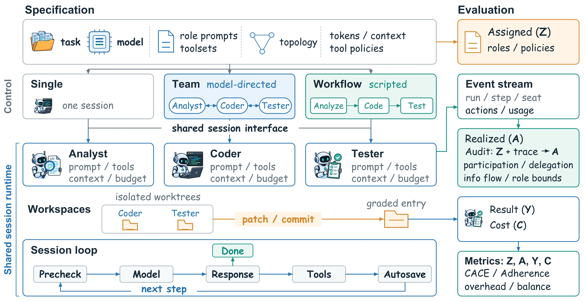
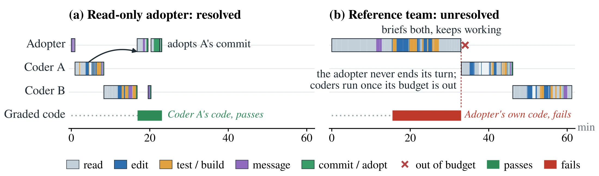
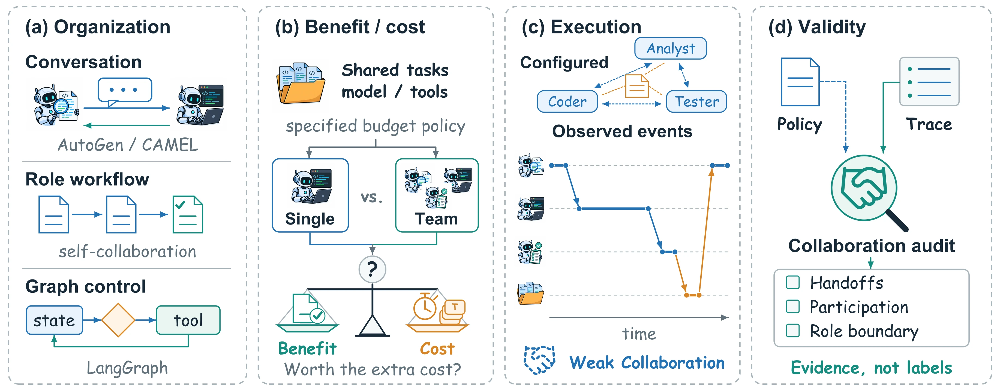

The illusion of collaboration
Multi-agent teams on repository-level tasks usually begin by configuring roles such as an Analyst, a Coder and a Tester. Left to decide on their own, models rarely delegate. Mostly the Adopter, the agent that receives the task, bypasses its teammates and resolves the issue alone; in other cases it spends its token allowance before issuing any handoff. Adherence, the share of runs in which the team works as declared, frequently falls below half as the system collapses into a single-agent loop. The paper calls this the illusion of collaboration.
Prompts and log filters do not fix it. Mandating delegation in the prompt makes Adherence swing with the phrasing. Keeping only the runs where agents collaborated biases the comparison: agents solve easy tasks alone and ask for help when stuck, so that subset skews toward harder tasks.
Every role runs through the same session loop, and pre-call admission enforces each role's token allowance, so no Adopter silently spends the run before it could delegate.
Every action and every token is bound to the role that produced it, so scripts can reconstruct who did what without parsing natural language.
From the stream we check each run: did every teammate act, did the Adopter delegate, did each role keep to its tools, budget and message routes. A run counts only if every check passes, which is what lets a gain be credited to the team.
Declare the organization, hold everything else, record what ran
OpenCollab separates orchestration from execution. Every role runs as a session through one ten-state loop that handles context, model calls and tools. Controllers above it govern topology, lifecycle and message routing: a model-directed Team, a scripted Workflow, or a Single agent.
One file states the team
Role prompts, per-role toolsets and a directed topology of who may address whom. A Workflow is a short Python module that fixes call order, fan-out and termination.
# configs/team.example.yaml (excerpt) entry: lead roles: analyst: tools: [bash, file_read, grep] coder: tools: [bash, file_read, file_write, apply_patch, grep, message_agent] reviewer: tools: [bash, file_read, git_diff, grep] # lead and all prompts omitted topology: lead: [analyst, coder, reviewer] analyst: [coder] coder: [reviewer] reviewer: [coder]
Runtime gates, not post-hoc filters
Five non-organizational factors are held identical across configurations at invocation time.
- modelone base model for every role
- toolsa call outside the role's toolset is refused and recorded
- budgetpre-call admission against a per-role token ceiling; an overrun halts the session with a termination record
- contextone compaction policy for every configuration
- topologya message off a declared edge is refused and recorded
An event stream, not prose logs
Every step appends a typed record stamped with its role, so scripts reconstruct the realized topology and each role's cost.
- Model call
- Tool execution
- Agent finish
- Session termination
- Refused spawn
- Worktree change
- Context shaping
Structural adherence
Adherence asks of every run: did the team you declared actually run? Six checks answer it. For each applicable check a run gets a verdict: adherent, deviant, or unverifiable. A run is adherent only if every applicable axis passes.
α̂adh is the share of a configuration's runs with adh(r) = 1; a run in which only one of two required teammates acts has adh(r) = 0. Under mean exclusion, ITT / α̂adh identifies the configuration-level complier effect.
reproduce the core multi-agent pattern of edict on OpenCollab. The same protocol ships as examples/mini-edict.
about 100× less code for the same organization

OpenCollab (Duo) sets the highest Pass@1 on all three benchmarks
Five harnesses run with GPT-5.6-Luna on SWE-bench Pro, Terminal-Bench 2.1 and DeepSWE. OpenCollab (Base) is the single agent. OpenCollab (Duo) is a Workflow in which code issues every handoff, so both Coders run on every task.
| Harness | Pass@1 (%) | Avg. tokens (M) | Avg. cost ($) | Cache hit (%) |
|---|
Duo 69.91% against Base 55.75%. Paired by task, Duo solves far more tasks the single agent fails than the other way round.
OpenCollab (Base) uses the fewest tokens and the lowest cost on all three benchmarks. Duo spends more, since it runs two complete solving processes and selects between their candidates, yet costs less than Claude Code on each.
Changing any single dimension shifts Adherence from 47.2% to as high as 97.2%
A model-directed team is audited through its event stream while one dimension changes at a time. The reference team uses Qwen3.8-Flash, open prompt cards, unrestricted tools and 2M tokens per role, on a random sample of SWE-bench Pro tasks. Unconstrained defaults yield 47.2% Adherence; restricting tool boundaries prevents isolated execution and lifts it above 90%, so collaboration can be controlled systematically.

Adherence decides how far a gain can be credited to the organization
Each configuration runs the same tasks once and is paired task by task with the Single agent. ITT is the Pass@1 difference from Single; CACE divides it by Adherence.
| Configuration | Adherence (%) | Pass@1 (%) | ITT | CACE |
|---|---|---|---|---|
| Single | – | 69.4 | – | – |
| Open card (reference) | 47.2 [47.2, 61.1] | 75.0 | +5.6 | +11.8 [+9.1, +11.8] |
| Mandatory card | 91.7 [91.7, 100.0] | 72.2 | +2.8 | +3.0 [+2.8, +3.0] |
| Budget stated, 2M | 75.0 [75.0, 83.3] | 69.4 | 0.0 | 0.0 [0.0, 0.0] |
| Read-only | 94.4 [94.4, 97.2] | 52.8 | −16.7 | −17.6 [−17.6, −17.1] |
Brackets show sensitivity to the labeling rule for unverifiable verdicts and are not confidence intervals.
Under the Open card, 47.2% Adherence rescales an ITT of +5.6 to a CACE of +11.8. The +5.6 arises on the tasks where the team did not form; the adherent tasks show −5.9, so +11.8 should not be read as the complier effect. Under the Mandatory card, the paired estimate over adherent runs coincides with CACE (+3.0).
Team minus Single in Pass@1 points; axis from −32 to +32. OpenCollab records Ar for every run on tasks also run by Single, so this contrast is computed rather than assumed.
Seven conditions for a controlled comparison
Five conditions hold non-organizational factors fixed; two verify what ran. The paper audits ten artifacts: none satisfies all seven, and OpenCollab meets all seven.
| held · can the factor be set explicitly? | verified · can the run be checked? | ||||||
|---|---|---|---|---|---|---|---|
| Artifact | Model | Tools | Budget | Context | Topology | Realized | Compared |
Start in three commands
OpenCollab works with any OpenAI-compatible or Anthropic endpoint. Declared teams, the Duo workflow and Mini Edict are covered in the README.
OpenCollab: A Multi-Agent Coding Framework with Programmable Collaboration and Controllable Runtime

BibTeX
Paper arXiv@misc{hsu2026opencollabmultiagentcodingframework,
title = {OpenCollab: A Multi-Agent Coding Framework with Programmable Collaboration and Controllable Runtime},
author = {Chun-Wah Hsu and Kai Gong and Yu Wu and Xianhe Chen and Mengyang Liu and Jie Li and Hanyu Li and Zhixuan Liu and Naisheng Tang and Jiaying Chi and Ziheng Fan and Xuning He and Xiaokang Yang and Xue Jiang and Yihong Dong},
year = {2026},
eprint = {2609.38345},
archivePrefix = {arXiv},
primaryClass = {cs.SE},
url = {https://arxiv.org/abs/2609.38345}
}